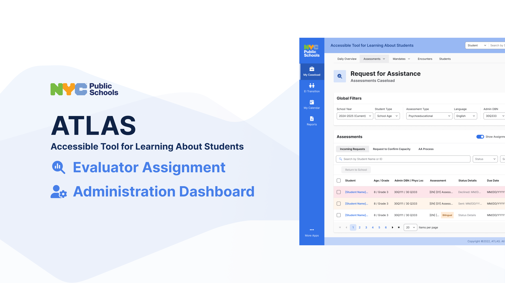

Case Study — 2025
ATLAS: Designing for a System That Cannot Fail
New York's SESIS platform was retiring after two decades. ATLAS was its replacement: a statewide IEP case management system where a missed deadline means a federal compliance violation, and a confusing interface means a child waits longer for support.

Context
A system where failure has consequences
Under the Individuals with Disabilities Education Act (IDEA), schools are legally required to complete student evaluations within fixed timelines. A delay is not just an operational failure. It is a federal violation with real consequences for schools and, more importantly, for students waiting on services.
SESIS, the legacy system built in the early 2000s, was being retired. ATLAS was the replacement, and it had to be ready for the 1,800+ schools and thousands of evaluators, case managers, and school psychologists who depended on it daily. There was no soft launch. There was no gradual rollout. It had to work on day one.
"The hardest part of this project was that the users had no margin for a learning curve. They were managing caseloads of 30 to 50 students each. If the new system slowed them down even slightly, it would compound across every student in their queue."
Discovery
What the system was hiding
I started with a research sprint before any design work. I ran interviews with evaluators, school psychologists, and case managers across multiple schools. I also observed how people actually used SESIS, which was different from how they were supposed to use it.
The key finding: most tracking was happening outside the system. Evaluators were keeping their own spreadsheets, sticky notes, and email threads to manage their assignment queues. SESIS showed them what was assigned but not the full picture of what was overdue, what was at risk, or what was waiting.
The evaluator assignment module was nominally a routing tool. But the real job to be done was capacity management under time pressure. Those are different design problems.

Three patterns surfaced consistently across participants:
Assignment blind spots. No way to see an evaluator's full current load before assigning a new case. Coordinators were guessing.
Deadline invisibility. Compliance deadlines were stored in the system but not surfaced at the point of decision. People had to navigate away to check them.
Specialty mismatch. Evaluators had specific areas of expertise. Nothing in SESIS helped coordinators match student needs to evaluator skills.
Design Decisions
Three decisions that shaped the module
Decision 01 — Surface capacity at the point of assignment
The old flow required coordinators to know an evaluator's load from memory or by navigating away. I redesigned the assignment modal to show each evaluator's current active caseload, upcoming deadlines, and specialty tags inline, before the assignment was made.
This required pulling data that existed elsewhere in the system and surfacing it contextually. I worked with the engineering lead to understand what was performant to query in real-time versus what needed to be pre-computed. That conversation shaped the final information architecture.

Decision 02 — Bring deadlines into the primary workflow
Compliance deadlines needed to be visible in the assignment queue itself, not buried in a case detail view. I introduced a status system with three states: on track, at risk, and overdue, with color and label differentiation designed to work for users with color vision deficiencies. The queue sorted by risk state by default.
There was internal debate about whether to alert users aggressively or show status passively. I advocated for passive status indicators in the queue paired with a single explicit alert for anything crossing into overdue. Aggressive alerts on a list of 50 items create noise that users learn to ignore. That argument won.
Decision 03 — Specialty matching without extra steps
I added evaluator specialty tags to the system and created a filter on the assignment panel that highlighted evaluators whose specialties matched the student's evaluation type. This was optional, not enforced, because coordinators sometimes had legitimate reasons to assign outside specialty (availability, school relationship, geography). The system surfaced the signal without removing judgment from the human.

Collaboration
How I worked with the team
I partnered with a project manager, two engineers, and a product owner at the NYC Department of Education. On the research side, I coordinated access to evaluators and school psychologists independently, since waiting for it to be scheduled through the agency would have cost weeks.
I ran weekly design reviews with the full team and presented two structural approaches to the product director at the midpoint: one that minimized development scope and one that solved the full capacity management problem at the cost of more engineering time. I made the case for the larger scope with research findings and a risk argument: the smaller scope would ship faster but require a redesign within six months as edge cases emerged. The full-scope approach was approved.
Specs were delivered as annotated Figma files with explicit state coverage for empty states, error states, and edge cases. Handoff was a walkthrough, not a document drop.
Outcome
What the module made possible
The evaluator assignment module shipped as part of ATLAS's initial rollout across New York City schools. Tracking time per assignment dropped by 40% compared to the SESIS workflow. More meaningfully, coordinators stopped keeping parallel spreadsheets. The system became the source of truth it was supposed to be.
That 40% is not a UX win. It is a capacity unlock. Hours recovered from coordination overhead went back to the students.
Reflection
What I'd do differently
I would push earlier for quantitative baseline data on how long the SESIS assignment flow actually took. We measured the improvement after launch, but I relied on qualitative reports for the before state. A time-on-task baseline from usability testing against SESIS would have made the outcome story tighter.
I'd also build a more explicit feedback loop into the post-launch phase. We shipped, gathered anecdotal feedback, and moved on. A structured check-in with five coordinators at the 30-day mark would have surfaced edge cases we patched reactively.